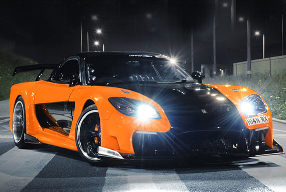
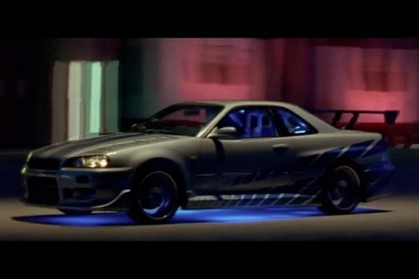
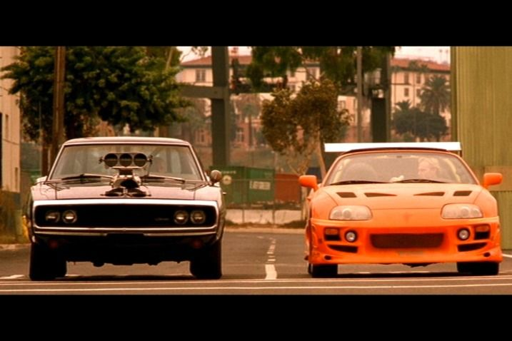
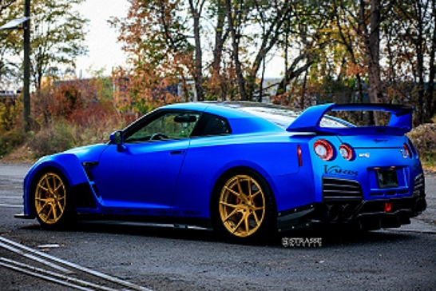
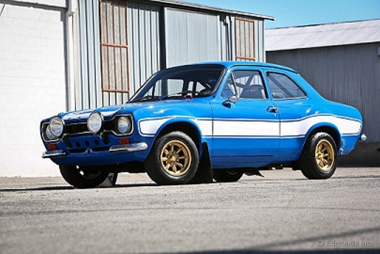

𝓢𝓤𝓙𝓐𝓝𝓝 𝓚
🆃🅷🅸🆂 🅿🅰🅶🅴 🅸🆂 🅰🅱🅾🆄🆃 🅼🆈 🅵🅰🆅🅾🆄🆁🅸🆃🅴 🅲🅰🆁🆂

𝕸𝖆𝖟𝖉𝖆 𝕽𝖃-7 𝕱𝕯
𝙏𝙝𝙚 𝙈𝙖𝙯𝙙𝙖 𝙍𝙓-7 𝙞𝙨 𝙖 𝙛𝙧𝙤𝙣𝙩/𝙢𝙞𝙙-𝙚𝙣𝙜𝙞𝙣𝙚, 𝙧𝙚𝙖𝙧-𝙬𝙝𝙚𝙚𝙡-𝙙𝙧𝙞𝙫𝙚, 𝙧𝙤𝙩𝙖𝙧𝙮 𝙚𝙣𝙜𝙞𝙣𝙚-𝙥𝙤𝙬𝙚𝙧𝙚𝙙 𝙨𝙥𝙤𝙧𝙩𝙨 𝙘𝙖𝙧 𝙩𝙝𝙖𝙩 𝙬𝙖𝙨 𝙢𝙖𝙣𝙪𝙛𝙖𝙘𝙩𝙪𝙧𝙚𝙙 𝙖𝙣𝙙 𝙢𝙖𝙧𝙠𝙚𝙩𝙚𝙙 𝙗𝙮 𝙈𝙖𝙯𝙙𝙖 𝙛𝙧𝙤𝙢 1978 𝙩𝙤 2002 𝙖𝙘𝙧𝙤𝙨𝙨 𝙩𝙝𝙧𝙚𝙚 𝙜𝙚𝙣𝙚𝙧𝙖𝙩𝙞𝙤𝙣𝙨, 𝙖𝙡𝙡 𝙤𝙛 𝙬𝙝𝙞𝙘𝙝 𝙢𝙖𝙙𝙚 𝙪𝙨𝙚 𝙤𝙛 𝙖 𝙘𝙤𝙢𝙥𝙖𝙘𝙩, 𝙡𝙞𝙜𝙝𝙩𝙬𝙚𝙞𝙜𝙝𝙩 𝙒𝙖𝙣𝙠𝙚𝙡 𝙧𝙤𝙩𝙖𝙧𝙮 𝙚𝙣𝙜𝙞𝙣𝙚. ... 𝙏𝙝𝙞𝙨 𝙛𝙚𝙖𝙩𝙪𝙧𝙚𝙙 𝙖 𝙨𝙚𝙦𝙪𝙚𝙣𝙩𝙞𝙖𝙡𝙡𝙮 𝙩𝙪𝙧𝙗𝙤𝙘𝙝𝙖𝙧𝙜𝙚𝙙 13𝘽 𝙍𝙀𝙒 𝙚𝙣𝙜𝙞𝙣𝙚
𝙏𝙝𝙚 𝙈𝙖𝙯𝙙𝙖 𝙍𝙓-7 𝙞𝙨 𝙖 𝙛𝙧𝙤𝙣𝙩/𝙢𝙞𝙙-𝙚𝙣𝙜𝙞𝙣𝙚, 𝙧𝙚𝙖𝙧-𝙬𝙝𝙚𝙚𝙡-𝙙𝙧𝙞𝙫𝙚, 𝙧𝙤𝙩𝙖𝙧𝙮 𝙚𝙣𝙜𝙞𝙣𝙚-𝙥𝙤𝙬𝙚𝙧𝙚𝙙 𝙨𝙥𝙤𝙧𝙩𝙨 𝙘𝙖𝙧 𝙩𝙝𝙖𝙩 𝙬𝙖𝙨 𝙢𝙖𝙣𝙪𝙛𝙖𝙘𝙩𝙪𝙧𝙚𝙙 𝙖𝙣𝙙 𝙢𝙖𝙧𝙠𝙚𝙩𝙚𝙙 𝙗𝙮 𝙈𝙖𝙯𝙙𝙖 𝙛𝙧𝙤𝙢 1978 𝙩𝙤 2002 𝙖𝙘𝙧𝙤𝙨𝙨 𝙩𝙝𝙧𝙚𝙚 𝙜𝙚𝙣𝙚𝙧𝙖𝙩𝙞𝙤𝙣𝙨, 𝙖𝙡𝙡 𝙤𝙛 𝙬𝙝𝙞𝙘𝙝 𝙢𝙖𝙙𝙚 𝙪𝙨𝙚 𝙤𝙛 𝙖 𝙘𝙤𝙢𝙥𝙖𝙘𝙩, 𝙡𝙞𝙜𝙝𝙩𝙬𝙚𝙞𝙜𝙝𝙩 𝙒𝙖𝙣𝙠𝙚𝙡 𝙧𝙤𝙩𝙖𝙧𝙮 𝙚𝙣𝙜𝙞𝙣𝙚. ... 𝙏𝙝𝙞𝙨 𝙛𝙚𝙖𝙩𝙪𝙧𝙚𝙙 𝙖 𝙨𝙚𝙦𝙪𝙚𝙣𝙩𝙞𝙖𝙡𝙡𝙮 𝙩𝙪𝙧𝙗𝙤𝙘𝙝𝙖𝙧𝙜𝙚𝙙 13𝘽 𝙍𝙀𝙒 𝙚𝙣𝙜𝙞𝙣𝙚

𝓝𝓘𝓢𝓢𝓘𝓐𝓝 𝓢𝓚𝓨𝓛𝓘𝓝𝓔 𝓖𝓣𝓡(𝓡34)
𝙒𝙝𝙚𝙚𝙡𝙨 𝙩𝙝𝙚𝙣 𝙘𝙖𝙧𝙧𝙞𝙚𝙙 𝙩𝙝𝙚 𝙣𝙖𝙢𝙚 𝙩𝙝𝙧𝙤𝙪𝙜𝙝 𝙖𝙡𝙡 𝙩𝙝𝙚 𝙜𝙚𝙣𝙚𝙧𝙖𝙩𝙞𝙤𝙣𝙨 𝙤𝙛 𝙎𝙠𝙮𝙡𝙞𝙣𝙚 𝙂𝙏-𝙍𝙨, 𝙢𝙤𝙨𝙩 𝙣𝙤𝙩𝙖𝙗𝙡𝙮 𝙩𝙝𝙚 𝙍34 𝙂𝙏-𝙍, "𝙂𝙤𝙙𝙯𝙞𝙡𝙡𝙖 𝙍𝙚𝙩𝙪𝙧𝙣𝙨" 𝙬𝙖𝙨 𝙙𝙚𝙨𝙘𝙧𝙞𝙗𝙚𝙙 𝙖𝙨 "𝙏𝙝𝙚 𝙗𝙚𝙨𝙩 𝙝𝙖𝙣𝙙𝙡𝙞𝙣𝙜 𝙘𝙖𝙧 𝙬𝙚 𝙝𝙖𝙫𝙚 𝙚𝙫𝙚𝙧 𝙙𝙧𝙞𝙫𝙚𝙣" 𝙖𝙣𝙙 𝙛𝙪𝙧𝙩𝙝𝙚𝙧 𝙧𝙖𝙣 𝙖 12.2 𝙦𝙪𝙖𝙧𝙩𝙚𝙧 𝙢𝙞𝙡𝙚 𝙩𝙞𝙢𝙚 𝙖𝙣𝙙 𝙖 4.0 𝙨𝙚𝙘𝙤𝙣𝙙 0-100 𝙠𝙢/𝙝 (62 𝙢𝙥𝙝) 𝙩𝙞𝙢𝙚. ... 𝙋𝙧𝙤𝙙𝙪𝙘𝙩𝙞𝙤𝙣 𝙤𝙛 𝙩𝙝𝙚 𝙎𝙠𝙮𝙡𝙞𝙣𝙚 𝙂𝙏-𝙍 𝙚𝙣𝙙𝙚𝙙 𝙞𝙣 𝘼𝙪𝙜𝙪𝙨𝙩 2002.
𝙒𝙝𝙚𝙚𝙡𝙨 𝙩𝙝𝙚𝙣 𝙘𝙖𝙧𝙧𝙞𝙚𝙙 𝙩𝙝𝙚 𝙣𝙖𝙢𝙚 𝙩𝙝𝙧𝙤𝙪𝙜𝙝 𝙖𝙡𝙡 𝙩𝙝𝙚 𝙜𝙚𝙣𝙚𝙧𝙖𝙩𝙞𝙤𝙣𝙨 𝙤𝙛 𝙎𝙠𝙮𝙡𝙞𝙣𝙚 𝙂𝙏-𝙍𝙨, 𝙢𝙤𝙨𝙩 𝙣𝙤𝙩𝙖𝙗𝙡𝙮 𝙩𝙝𝙚 𝙍34 𝙂𝙏-𝙍, "𝙂𝙤𝙙𝙯𝙞𝙡𝙡𝙖 𝙍𝙚𝙩𝙪𝙧𝙣𝙨" 𝙬𝙖𝙨 𝙙𝙚𝙨𝙘𝙧𝙞𝙗𝙚𝙙 𝙖𝙨 "𝙏𝙝𝙚 𝙗𝙚𝙨𝙩 𝙝𝙖𝙣𝙙𝙡𝙞𝙣𝙜 𝙘𝙖𝙧 𝙬𝙚 𝙝𝙖𝙫𝙚 𝙚𝙫𝙚𝙧 𝙙𝙧𝙞𝙫𝙚𝙣" 𝙖𝙣𝙙 𝙛𝙪𝙧𝙩𝙝𝙚𝙧 𝙧𝙖𝙣 𝙖 12.2 𝙦𝙪𝙖𝙧𝙩𝙚𝙧 𝙢𝙞𝙡𝙚 𝙩𝙞𝙢𝙚 𝙖𝙣𝙙 𝙖 4.0 𝙨𝙚𝙘𝙤𝙣𝙙 0-100 𝙠𝙢/𝙝 (62 𝙢𝙥𝙝) 𝙩𝙞𝙢𝙚. ... 𝙋𝙧𝙤𝙙𝙪𝙘𝙩𝙞𝙤𝙣 𝙤𝙛 𝙩𝙝𝙚 𝙎𝙠𝙮𝙡𝙞𝙣𝙚 𝙂𝙏-𝙍 𝙚𝙣𝙙𝙚𝙙 𝙞𝙣 𝘼𝙪𝙜𝙪𝙨𝙩 2002.

𝓓𝓞𝓓𝓖𝓔 𝓒𝓗𝓐𝓛𝓔𝓝𝓖𝓔𝓡 𝓐𝓝𝓓 𝓣𝓞𝓨𝓞𝓣𝓐 𝓢𝓤𝓟𝓡𝓐
"ᴅᴏᴅɢᴇ ᴄʜᴀʟʟᴇɴɢᴇʀ ꜱʀᴛ8. ... ᴛʜᴇ ꜱʀᴛ8 ɪꜱ ᴇꜱꜱᴇɴᴛɪᴀʟʟʏ ᴀ ᴄʜᴀʀɢᴇʀ ꜱʀᴛ8 ꜱᴇᴅᴀɴ ᴡɪᴛʜ ꜰᴏᴜʀ ɪɴᴄʜᴇꜱ ᴄᴜᴛ ꜰʀᴏᴍ ᴛʜᴇ ᴍɪᴅᴅʟᴇ ᴀɴᴅ ᴛᴡᴏ ꜰᴇᴡᴇʀ ᴅᴏᴏʀꜱ; ɪᴛ'ꜱ ᴘᴏᴡᴇʀᴇᴅ ʙʏ ᴛʜᴇ ꜱᴀᴍᴇ 425-ʜᴘ, 6.1-ʟɪᴛᴇʀ ʜᴇᴍɪ ᴠ-8 ꜰᴏᴜɴᴅ ɪɴ ᴏᴛʜᴇʀ ꜱʀᴛ8 ᴍᴏᴅᴇʟꜱ ɪɴ ᴛʜᴇ ᴄʜʀʏꜱʟᴇʀ ꜰᴀᴍɪʟʏ; ᴀɴᴅ ɪᴛ ʟᴏᴏᴋꜱ ꜱᴘᴇᴄᴛᴀᴄᴜʟᴀʀ ɪɴ ᴏʀᴀɴɢᴇ"<ʙʀ>"ᴛʜᴇ ᴛᴏʏᴏᴛᴀ ꜱᴜᴘʀᴀ ᴡᴀꜱ ᴅᴇꜱɪɢɴᴇᴅ ᴛᴏ ʙᴇ ᴀ ꜱᴘᴏʀᴛɪɴɢ ᴍᴀᴄʜɪɴᴇ ᴛʜᴀᴛ ᴄᴏᴜʟᴅ ᴄᴏᴍᴘᴇᴛᴇ ᴡɪᴛʜ ᴍᴀɴʏ ᴏꜰ ᴛʜᴇ ᴍᴀᴊᴏʀ ᴘᴏᴡᴇʀʜᴏᴜꜱᴇꜱ ᴏꜰ ᴛʜᴇ ᴅᴀʏ, ʙᴜᴛ ɪᴛ ᴡᴀꜱɴ’ᴛ ᴜɴᴛɪʟ ᴛʜᴇ ꜰᴏᴜʀᴛʜ ɢᴇɴᴇʀᴀᴛɪᴏɴ ꜱᴜᴘʀᴀ ʙᴏᴡᴇᴅ ɪɴ 1993, ᴛʜᴀᴛ ᴛʜᴇ ᴄᴀʀ ɢᴀɪɴᴇᴅ ɪᴛꜱ ꜱᴛᴀᴛᴜꜱ ᴀꜱ ᴏɴᴇ ᴏꜰ ᴛʜᴇ ᴀʟʟ-ᴛɪᴍᴇ ɢʀᴇᴀᴛꜱ."
"ᴅᴏᴅɢᴇ ᴄʜᴀʟʟᴇɴɢᴇʀ ꜱʀᴛ8. ... ᴛʜᴇ ꜱʀᴛ8 ɪꜱ ᴇꜱꜱᴇɴᴛɪᴀʟʟʏ ᴀ ᴄʜᴀʀɢᴇʀ ꜱʀᴛ8 ꜱᴇᴅᴀɴ ᴡɪᴛʜ ꜰᴏᴜʀ ɪɴᴄʜᴇꜱ ᴄᴜᴛ ꜰʀᴏᴍ ᴛʜᴇ ᴍɪᴅᴅʟᴇ ᴀɴᴅ ᴛᴡᴏ ꜰᴇᴡᴇʀ ᴅᴏᴏʀꜱ; ɪᴛ'ꜱ ᴘᴏᴡᴇʀᴇᴅ ʙʏ ᴛʜᴇ ꜱᴀᴍᴇ 425-ʜᴘ, 6.1-ʟɪᴛᴇʀ ʜᴇᴍɪ ᴠ-8 ꜰᴏᴜɴᴅ ɪɴ ᴏᴛʜᴇʀ ꜱʀᴛ8 ᴍᴏᴅᴇʟꜱ ɪɴ ᴛʜᴇ ᴄʜʀʏꜱʟᴇʀ ꜰᴀᴍɪʟʏ; ᴀɴᴅ ɪᴛ ʟᴏᴏᴋꜱ ꜱᴘᴇᴄᴛᴀᴄᴜʟᴀʀ ɪɴ ᴏʀᴀɴɢᴇ"<ʙʀ>"ᴛʜᴇ ᴛᴏʏᴏᴛᴀ ꜱᴜᴘʀᴀ ᴡᴀꜱ ᴅᴇꜱɪɢɴᴇᴅ ᴛᴏ ʙᴇ ᴀ ꜱᴘᴏʀᴛɪɴɢ ᴍᴀᴄʜɪɴᴇ ᴛʜᴀᴛ ᴄᴏᴜʟᴅ ᴄᴏᴍᴘᴇᴛᴇ ᴡɪᴛʜ ᴍᴀɴʏ ᴏꜰ ᴛʜᴇ ᴍᴀᴊᴏʀ ᴘᴏᴡᴇʀʜᴏᴜꜱᴇꜱ ᴏꜰ ᴛʜᴇ ᴅᴀʏ, ʙᴜᴛ ɪᴛ ᴡᴀꜱɴ’ᴛ ᴜɴᴛɪʟ ᴛʜᴇ ꜰᴏᴜʀᴛʜ ɢᴇɴᴇʀᴀᴛɪᴏɴ ꜱᴜᴘʀᴀ ʙᴏᴡᴇᴅ ɪɴ 1993, ᴛʜᴀᴛ ᴛʜᴇ ᴄᴀʀ ɢᴀɪɴᴇᴅ ɪᴛꜱ ꜱᴛᴀᴛᴜꜱ ᴀꜱ ᴏɴᴇ ᴏꜰ ᴛʜᴇ ᴀʟʟ-ᴛɪᴍᴇ ɢʀᴇᴀᴛꜱ."

𝓝𝓘𝓢𝓢𝓐𝓝 𝓖𝓣𝓡(𝓡35)
𝓑𝓮𝓽𝔀𝓮𝓮𝓷 1969 𝓪𝓷𝓭 1974, 𝓪𝓷𝓭 𝓪𝓰𝓪𝓲𝓷 𝓫𝓮𝓽𝔀𝓮𝓮𝓷 1989 𝓪𝓷𝓭 2002, 𝓝𝓲𝓼𝓼𝓪𝓷 𝓹𝓻𝓸𝓭𝓾𝓬𝓮𝓭 𝓪 𝓱𝓲𝓰𝓱 𝓹𝓮𝓻𝓯𝓸𝓻𝓶𝓪𝓷𝓬𝓮 𝓿𝓮𝓻𝓼𝓲𝓸𝓷 𝓸𝓯 𝓲𝓽𝓼 𝓢𝓴𝔂𝓵𝓲𝓷𝓮 𝓬𝓸𝓾𝓹𝓮 𝓬𝓪𝓵𝓵𝓮𝓭 𝓽𝓱𝓮 𝓝𝓲𝓼𝓼𝓪𝓷 𝓢𝓴𝔂𝓵𝓲𝓷𝓮 𝓖𝓣-𝓡. 𝓣𝓱𝓲𝓼 𝓬𝓪𝓻 𝓹𝓻𝓸𝓿𝓮𝓭 𝓽𝓸 𝓫𝓮 𝓲𝓬𝓸𝓷𝓲𝓬 𝓯𝓸𝓻 𝓝𝓲𝓼𝓼𝓪𝓷[5][6] 𝓪𝓷𝓭 𝓪𝓬𝓱𝓲𝓮𝓿𝓮𝓭 𝓶𝓾𝓬𝓱 𝓯𝓪𝓶𝓮 𝓪𝓷𝓭 𝓼𝓾𝓬𝓬𝓮𝓼𝓼 𝓸𝓷 𝓫𝓸𝓽𝓱 𝓻𝓸𝓪𝓭 𝓪𝓷𝓭 𝓽𝓻𝓪𝓬𝓴. 𝓣𝓱𝓮 𝓖𝓣-𝓡 𝓲𝓼 𝓪𝓷 𝓮𝓷𝓽𝓲𝓻𝓮𝓵𝔂 𝓷𝓮𝔀 𝓶𝓸𝓭𝓮𝓵 𝓼𝓱𝓪𝓻𝓲𝓷𝓰 𝓵𝓲𝓽𝓽𝓵𝓮 𝔀𝓲𝓽𝓱 𝓽𝓱𝓮 𝓢𝓴𝔂𝓵𝓲𝓷𝓮 𝓖𝓣-𝓡 𝓼𝓪𝓿𝓮 𝓲𝓽𝓼 𝓼𝓲𝓰𝓷𝓪𝓽𝓾𝓻𝓮 𝓯𝓸𝓾𝓻 𝓻𝓸𝓾𝓷𝓭 𝓽𝓪𝓲𝓵 𝓵𝓲𝓰𝓱𝓽𝓼. 𝓛𝓲𝓴𝓮 𝓼𝓸𝓶𝓮 𝓵𝓪𝓽𝓮𝓻 𝓰𝓮𝓷𝓮𝓻𝓪𝓽𝓲𝓸𝓷𝓼 𝓸𝓯 𝓽𝓱𝓮 𝓢𝓴𝔂𝓵𝓲𝓷𝓮 𝓖𝓣-𝓡, 𝓽𝓱𝓮 𝓖𝓣-𝓡 𝓱𝓪𝓼 𝓪𝓵𝓵-𝔀𝓱𝓮𝓮𝓵 𝓭𝓻𝓲𝓿𝓮 𝔀𝓲𝓽𝓱 𝓪 𝓽𝔀𝓲𝓷-𝓽𝓾𝓻𝓫𝓸𝓬𝓱𝓪𝓻𝓰𝓮𝓭 6-𝓬𝔂𝓵𝓲𝓷𝓭𝓮𝓻 𝓮𝓷𝓰𝓲𝓷𝓮. 𝓑𝓾𝓽 𝓽𝓱𝓮 𝓯𝓸𝓾𝓻-𝔀𝓱𝓮𝓮𝓵-𝓼𝓽𝓮𝓮𝓻𝓲𝓷𝓰 𝓗𝓘𝓒𝓐𝓢 𝓼𝔂𝓼𝓽𝓮𝓶 𝓱𝓪𝓼 𝓫𝓮𝓮𝓷 𝓻𝓮𝓶𝓸𝓿𝓮𝓭 𝓪𝓷𝓭 𝓽𝓱𝓮 𝓯𝓸𝓻𝓶𝓮𝓻 𝓼𝓽𝓻𝓪𝓲𝓰𝓱𝓽-6 𝓡𝓑26𝓓𝓔𝓣𝓣 𝓮𝓷𝓰𝓲𝓷𝓮 𝓱𝓪𝓼 𝓫𝓮𝓮𝓷 𝓻𝓮𝓹𝓵𝓪𝓬𝓮𝓭 𝔀𝓲𝓽𝓱 𝓪 𝓷𝓮𝔀 𝓥𝓡38𝓓𝓔𝓣𝓣 𝓥6 𝓮𝓷𝓰𝓲𝓷𝓮.[7] 𝓑𝓮𝓬𝓪𝓾𝓼𝓮 𝓸𝓯 𝓽𝓱𝓮 𝓖𝓣-𝓡'𝓼 𝓱𝓮𝓻𝓲𝓽𝓪𝓰𝓮, 𝓽𝓱𝓮 𝓬𝓱𝓪𝓼𝓼𝓲𝓼 𝓬𝓸𝓭𝓮 𝓯𝓸𝓻 𝓽𝓱𝓮 𝓪𝓵𝓵-𝓷𝓮𝔀 𝓿𝓮𝓻𝓼𝓲𝓸𝓷 𝓱𝓪𝓼 𝓫𝓮𝓮𝓷 𝓬𝓪𝓵𝓵𝓮𝓭 𝓒𝓑𝓐-𝓡35,[8] 𝓸𝓻 𝓡35 𝓯𝓸𝓻 𝓼𝓱𝓸𝓻𝓽 (𝔀𝓱𝓮𝓻𝓮 𝓒𝓑𝓐 𝓼𝓽𝓪𝓷𝓭𝓼 𝓯𝓸𝓻 𝓽𝓱𝓮 𝓮𝓶𝓲𝓼𝓼𝓲𝓸𝓷𝓼 𝓼𝓽𝓪𝓷𝓭𝓪𝓻𝓭 𝓹𝓻𝓮𝓯𝓲𝔁), 𝓬𝓪𝓻𝓻𝔂𝓲𝓷𝓰 𝓸𝓷 𝓽𝓱𝓮 𝓷𝓪𝓶𝓲𝓷𝓰 𝓽𝓻𝓮𝓷𝓭 𝓯𝓻𝓸𝓶 𝓹𝓻𝓮𝓿𝓲𝓸𝓾𝓼 𝓢𝓴𝔂𝓵𝓲𝓷𝓮 𝓖𝓣-𝓡 𝓰𝓮𝓷𝓮𝓻𝓪𝓽𝓲𝓸𝓷𝓼. 𝓣𝓱𝓮 𝓖𝓣-𝓡 𝓱𝓪𝓼 𝓪𝓵𝓼𝓸 𝓻𝓮𝓽𝓪𝓲𝓷𝓮𝓭 𝓲𝓽𝓼 𝓢𝓴𝔂𝓵𝓲𝓷𝓮 𝓹𝓻𝓮𝓭𝓮𝓬𝓮𝓼𝓼𝓸𝓻'𝓼 𝓷𝓲𝓬𝓴𝓷𝓪𝓶𝓮, 𝓖𝓸𝓭𝔃𝓲𝓵𝓵𝓪,[9] 𝓸𝓻𝓲𝓰𝓲𝓷𝓪𝓵𝓵𝔂 𝓰𝓲𝓿𝓮𝓷 𝓽𝓸 𝓲𝓽 𝓫𝔂 𝓽𝓱𝓮 𝓐𝓾𝓼𝓽𝓻𝓪𝓵𝓲𝓪𝓷 𝓶𝓸𝓽𝓸𝓻𝓲𝓷𝓰 𝓹𝓾𝓫𝓵𝓲𝓬𝓪𝓽𝓲𝓸𝓷 𝓦𝓱𝓮𝓮𝓵𝓼 𝓲𝓷 𝓲𝓽𝓼 𝓙𝓾𝓵𝔂 1989 𝓮𝓭𝓲𝓽𝓲𝓸𝓷.
𝓑𝓮𝓽𝔀𝓮𝓮𝓷 1969 𝓪𝓷𝓭 1974, 𝓪𝓷𝓭 𝓪𝓰𝓪𝓲𝓷 𝓫𝓮𝓽𝔀𝓮𝓮𝓷 1989 𝓪𝓷𝓭 2002, 𝓝𝓲𝓼𝓼𝓪𝓷 𝓹𝓻𝓸𝓭𝓾𝓬𝓮𝓭 𝓪 𝓱𝓲𝓰𝓱 𝓹𝓮𝓻𝓯𝓸𝓻𝓶𝓪𝓷𝓬𝓮 𝓿𝓮𝓻𝓼𝓲𝓸𝓷 𝓸𝓯 𝓲𝓽𝓼 𝓢𝓴𝔂𝓵𝓲𝓷𝓮 𝓬𝓸𝓾𝓹𝓮 𝓬𝓪𝓵𝓵𝓮𝓭 𝓽𝓱𝓮 𝓝𝓲𝓼𝓼𝓪𝓷 𝓢𝓴𝔂𝓵𝓲𝓷𝓮 𝓖𝓣-𝓡. 𝓣𝓱𝓲𝓼 𝓬𝓪𝓻 𝓹𝓻𝓸𝓿𝓮𝓭 𝓽𝓸 𝓫𝓮 𝓲𝓬𝓸𝓷𝓲𝓬 𝓯𝓸𝓻 𝓝𝓲𝓼𝓼𝓪𝓷[5][6] 𝓪𝓷𝓭 𝓪𝓬𝓱𝓲𝓮𝓿𝓮𝓭 𝓶𝓾𝓬𝓱 𝓯𝓪𝓶𝓮 𝓪𝓷𝓭 𝓼𝓾𝓬𝓬𝓮𝓼𝓼 𝓸𝓷 𝓫𝓸𝓽𝓱 𝓻𝓸𝓪𝓭 𝓪𝓷𝓭 𝓽𝓻𝓪𝓬𝓴. 𝓣𝓱𝓮 𝓖𝓣-𝓡 𝓲𝓼 𝓪𝓷 𝓮𝓷𝓽𝓲𝓻𝓮𝓵𝔂 𝓷𝓮𝔀 𝓶𝓸𝓭𝓮𝓵 𝓼𝓱𝓪𝓻𝓲𝓷𝓰 𝓵𝓲𝓽𝓽𝓵𝓮 𝔀𝓲𝓽𝓱 𝓽𝓱𝓮 𝓢𝓴𝔂𝓵𝓲𝓷𝓮 𝓖𝓣-𝓡 𝓼𝓪𝓿𝓮 𝓲𝓽𝓼 𝓼𝓲𝓰𝓷𝓪𝓽𝓾𝓻𝓮 𝓯𝓸𝓾𝓻 𝓻𝓸𝓾𝓷𝓭 𝓽𝓪𝓲𝓵 𝓵𝓲𝓰𝓱𝓽𝓼. 𝓛𝓲𝓴𝓮 𝓼𝓸𝓶𝓮 𝓵𝓪𝓽𝓮𝓻 𝓰𝓮𝓷𝓮𝓻𝓪𝓽𝓲𝓸𝓷𝓼 𝓸𝓯 𝓽𝓱𝓮 𝓢𝓴𝔂𝓵𝓲𝓷𝓮 𝓖𝓣-𝓡, 𝓽𝓱𝓮 𝓖𝓣-𝓡 𝓱𝓪𝓼 𝓪𝓵𝓵-𝔀𝓱𝓮𝓮𝓵 𝓭𝓻𝓲𝓿𝓮 𝔀𝓲𝓽𝓱 𝓪 𝓽𝔀𝓲𝓷-𝓽𝓾𝓻𝓫𝓸𝓬𝓱𝓪𝓻𝓰𝓮𝓭 6-𝓬𝔂𝓵𝓲𝓷𝓭𝓮𝓻 𝓮𝓷𝓰𝓲𝓷𝓮. 𝓑𝓾𝓽 𝓽𝓱𝓮 𝓯𝓸𝓾𝓻-𝔀𝓱𝓮𝓮𝓵-𝓼𝓽𝓮𝓮𝓻𝓲𝓷𝓰 𝓗𝓘𝓒𝓐𝓢 𝓼𝔂𝓼𝓽𝓮𝓶 𝓱𝓪𝓼 𝓫𝓮𝓮𝓷 𝓻𝓮𝓶𝓸𝓿𝓮𝓭 𝓪𝓷𝓭 𝓽𝓱𝓮 𝓯𝓸𝓻𝓶𝓮𝓻 𝓼𝓽𝓻𝓪𝓲𝓰𝓱𝓽-6 𝓡𝓑26𝓓𝓔𝓣𝓣 𝓮𝓷𝓰𝓲𝓷𝓮 𝓱𝓪𝓼 𝓫𝓮𝓮𝓷 𝓻𝓮𝓹𝓵𝓪𝓬𝓮𝓭 𝔀𝓲𝓽𝓱 𝓪 𝓷𝓮𝔀 𝓥𝓡38𝓓𝓔𝓣𝓣 𝓥6 𝓮𝓷𝓰𝓲𝓷𝓮.[7] 𝓑𝓮𝓬𝓪𝓾𝓼𝓮 𝓸𝓯 𝓽𝓱𝓮 𝓖𝓣-𝓡'𝓼 𝓱𝓮𝓻𝓲𝓽𝓪𝓰𝓮, 𝓽𝓱𝓮 𝓬𝓱𝓪𝓼𝓼𝓲𝓼 𝓬𝓸𝓭𝓮 𝓯𝓸𝓻 𝓽𝓱𝓮 𝓪𝓵𝓵-𝓷𝓮𝔀 𝓿𝓮𝓻𝓼𝓲𝓸𝓷 𝓱𝓪𝓼 𝓫𝓮𝓮𝓷 𝓬𝓪𝓵𝓵𝓮𝓭 𝓒𝓑𝓐-𝓡35,[8] 𝓸𝓻 𝓡35 𝓯𝓸𝓻 𝓼𝓱𝓸𝓻𝓽 (𝔀𝓱𝓮𝓻𝓮 𝓒𝓑𝓐 𝓼𝓽𝓪𝓷𝓭𝓼 𝓯𝓸𝓻 𝓽𝓱𝓮 𝓮𝓶𝓲𝓼𝓼𝓲𝓸𝓷𝓼 𝓼𝓽𝓪𝓷𝓭𝓪𝓻𝓭 𝓹𝓻𝓮𝓯𝓲𝔁), 𝓬𝓪𝓻𝓻𝔂𝓲𝓷𝓰 𝓸𝓷 𝓽𝓱𝓮 𝓷𝓪𝓶𝓲𝓷𝓰 𝓽𝓻𝓮𝓷𝓭 𝓯𝓻𝓸𝓶 𝓹𝓻𝓮𝓿𝓲𝓸𝓾𝓼 𝓢𝓴𝔂𝓵𝓲𝓷𝓮 𝓖𝓣-𝓡 𝓰𝓮𝓷𝓮𝓻𝓪𝓽𝓲𝓸𝓷𝓼. 𝓣𝓱𝓮 𝓖𝓣-𝓡 𝓱𝓪𝓼 𝓪𝓵𝓼𝓸 𝓻𝓮𝓽𝓪𝓲𝓷𝓮𝓭 𝓲𝓽𝓼 𝓢𝓴𝔂𝓵𝓲𝓷𝓮 𝓹𝓻𝓮𝓭𝓮𝓬𝓮𝓼𝓼𝓸𝓻'𝓼 𝓷𝓲𝓬𝓴𝓷𝓪𝓶𝓮, 𝓖𝓸𝓭𝔃𝓲𝓵𝓵𝓪,[9] 𝓸𝓻𝓲𝓰𝓲𝓷𝓪𝓵𝓵𝔂 𝓰𝓲𝓿𝓮𝓷 𝓽𝓸 𝓲𝓽 𝓫𝔂 𝓽𝓱𝓮 𝓐𝓾𝓼𝓽𝓻𝓪𝓵𝓲𝓪𝓷 𝓶𝓸𝓽𝓸𝓻𝓲𝓷𝓰 𝓹𝓾𝓫𝓵𝓲𝓬𝓪𝓽𝓲𝓸𝓷 𝓦𝓱𝓮𝓮𝓵𝓼 𝓲𝓷 𝓲𝓽𝓼 𝓙𝓾𝓵𝔂 1989 𝓮𝓭𝓲𝓽𝓲𝓸𝓷.

𝓕𝓞𝓡𝓓 𝓔𝓢𝓒𝓞𝓡𝓣
𝙏𝙝𝙚 𝙁𝙤𝙧𝙙 𝙀𝙨𝙘𝙤𝙧𝙩 𝙞𝙨 𝙖 𝙨𝙢𝙖𝙡𝙡 𝙛𝙖𝙢𝙞𝙡𝙮 𝙘𝙖𝙧 𝙬𝙝𝙞𝙘𝙝 𝙬𝙖𝙨 𝙢𝙖𝙣𝙪𝙛𝙖𝙘𝙩𝙪𝙧𝙚𝙙 𝙗𝙮 𝙁𝙤𝙧𝙙 𝙀𝙪𝙧𝙤𝙥𝙚 𝙛𝙧𝙤𝙢 1968 𝙩𝙤 2004. 𝙏𝙝𝙚 𝙁𝙤𝙧𝙙 𝙀𝙨𝙘𝙤𝙧𝙩 𝙣𝙖𝙢𝙚 𝙬𝙖𝙨 𝙖𝙡𝙨𝙤 𝙖𝙥𝙥𝙡𝙞𝙚𝙙 𝙩𝙤 𝙨𝙚𝙫𝙚𝙧𝙖𝙡 𝙨𝙢𝙖𝙡𝙡 𝙘𝙖𝙧 𝙩𝙮𝙥𝙚𝙨 𝙥𝙧𝙤𝙙𝙪𝙘𝙚𝙙 𝙞𝙣 𝙉𝙤𝙧𝙩𝙝 𝘼𝙢𝙚𝙧𝙞𝙘𝙖 𝙗𝙮 𝙁𝙤𝙧𝙙 𝙗𝙚𝙩𝙬𝙚𝙚𝙣 1981 𝙖𝙣𝙙 2004. 𝙄𝙣 2014, 𝙁𝙤𝙧𝙙 𝙧𝙚𝙫𝙞𝙫𝙚𝙙 𝙩𝙝𝙚 𝙀𝙨𝙘𝙤𝙧𝙩 𝙣𝙖𝙢𝙚 𝙛𝙤𝙧 𝙖 𝙘𝙖𝙧 𝙗𝙖𝙨𝙚𝙙 𝙤𝙣 𝙩𝙝𝙚 𝙨𝙚𝙘𝙤𝙣𝙙-𝙜𝙚𝙣𝙚𝙧𝙖𝙩𝙞𝙤𝙣 𝙁𝙤𝙧𝙙 𝙁𝙤𝙘𝙪𝙨 𝙨𝙤𝙡𝙙 𝙤𝙣 𝙩𝙝𝙚 𝘾𝙝𝙞𝙣𝙚𝙨𝙚 𝙢𝙖𝙧𝙠𝙚𝙩.
𝙏𝙝𝙚 𝙁𝙤𝙧𝙙 𝙀𝙨𝙘𝙤𝙧𝙩 𝙞𝙨 𝙖 𝙨𝙢𝙖𝙡𝙡 𝙛𝙖𝙢𝙞𝙡𝙮 𝙘𝙖𝙧 𝙬𝙝𝙞𝙘𝙝 𝙬𝙖𝙨 𝙢𝙖𝙣𝙪𝙛𝙖𝙘𝙩𝙪𝙧𝙚𝙙 𝙗𝙮 𝙁𝙤𝙧𝙙 𝙀𝙪𝙧𝙤𝙥𝙚 𝙛𝙧𝙤𝙢 1968 𝙩𝙤 2004. 𝙏𝙝𝙚 𝙁𝙤𝙧𝙙 𝙀𝙨𝙘𝙤𝙧𝙩 𝙣𝙖𝙢𝙚 𝙬𝙖𝙨 𝙖𝙡𝙨𝙤 𝙖𝙥𝙥𝙡𝙞𝙚𝙙 𝙩𝙤 𝙨𝙚𝙫𝙚𝙧𝙖𝙡 𝙨𝙢𝙖𝙡𝙡 𝙘𝙖𝙧 𝙩𝙮𝙥𝙚𝙨 𝙥𝙧𝙤𝙙𝙪𝙘𝙚𝙙 𝙞𝙣 𝙉𝙤𝙧𝙩𝙝 𝘼𝙢𝙚𝙧𝙞𝙘𝙖 𝙗𝙮 𝙁𝙤𝙧𝙙 𝙗𝙚𝙩𝙬𝙚𝙚𝙣 1981 𝙖𝙣𝙙 2004. 𝙄𝙣 2014, 𝙁𝙤𝙧𝙙 𝙧𝙚𝙫𝙞𝙫𝙚𝙙 𝙩𝙝𝙚 𝙀𝙨𝙘𝙤𝙧𝙩 𝙣𝙖𝙢𝙚 𝙛𝙤𝙧 𝙖 𝙘𝙖𝙧 𝙗𝙖𝙨𝙚𝙙 𝙤𝙣 𝙩𝙝𝙚 𝙨𝙚𝙘𝙤𝙣𝙙-𝙜𝙚𝙣𝙚𝙧𝙖𝙩𝙞𝙤𝙣 𝙁𝙤𝙧𝙙 𝙁𝙤𝙘𝙪𝙨 𝙨𝙤𝙡𝙙 𝙤𝙣 𝙩𝙝𝙚 𝘾𝙝𝙞𝙣𝙚𝙨𝙚 𝙢𝙖𝙧𝙠𝙚𝙩.